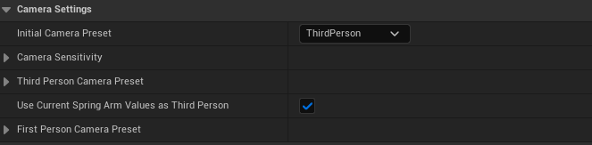
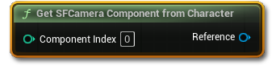

相机、触发器与 Actor 标签
SF 的相机用的是「弹簧臂 + 自定义相机组件」的常规结构，所以你可以放心改。这一章还列出 9 个场景触发器与 3 个特殊 Actor 标签——它们能让你的关卡自己讲故事。
相机是很多模板的“黑盒”：一改就崩。SF 特意选了最普通的结构——弹簧臂 + 相机组件， 只把相机组件换成自己的子类。这意味着你以前学过的相机知识，在这里全部适用。
结构：一个组件替换，其余照旧
打开角色蓝图，你会看到熟悉的三件套：CapsuleComponent → SpringArm → Camera。
唯一的区别是相机组件换成了 SFDefaultCamera_CC，它和原生相机组件用法一样，只是多了几个函数。
这个相机组件配合玩家控制器上的 SFCameraManager_AC 工作：管理器负责“用哪套参数”，相机组件负责“实际执行”。
| 在哪改 | 改什么 |
|---|---|
玩家控制器 → SFCameraManager_AC |
Initial Camera Preset（初始第一/第三人称）、鼠标与手柄灵敏度、两套相机预设的参数 |
角色蓝图 → SFDefaultCamera_CC |
Can Effect Parent Spring Arm（是否允许相机修改弹簧臂）、Attach Spring Arm to Bone（把弹簧臂绑到骨骼上） |
每套预设包含五个值：视野（FOV）、弹簧臂距离、弹簧臂偏移、移动平滑、旋转平滑。

Initial Camera Preset 决定开局用第几人称，下面三组是灵敏度与两套预设参数。
Use Current Spring Arm Values as Third Person 勾上后，第三人称会直接使用你角色蓝图上弹簧臂的现有数值，
忽略预设里的值。如果你已经调好了弹簧臂，勾它就行。
第一人称和第三人称的弹簧臂距离差很多。切换时如果没有做插值，镜头会瞬移。
SF 内部做了平滑，但如果你自己用 Update Camera Preset 快速来回切，仍可能看到跳变——
加一个 0.2 秒的延迟或插值即可。
相机函数：六个够用了
先用 Get SF Camera Component from Character 拿到相机，再调用：

| 函数 | 视角 | 效果 |
|---|---|---|
Soft Focus Camera | 两者 | 按倍率缩放视野，带插值速度；传 Stop 可还原 |
Inverse Spring Arm Offset | 第三人称 | 左右翻转弹簧臂偏移，实现“换肩” |
Lean Spring Arm | 第一人称 | 探头/侧身：指定方向、位移、翻滚角、插值速度 |
Update Camera Preset | 两者 | 在第一/第三人称之间切换 |
Reset All Camera Events | 两者 | 把上面这些改动全部还原 |
Lock Focus On Target | 两者 | 强制把镜头转向某个位置，直到再次调用并设 Stop Focusing |
Look At Target Once | 两者 | 在规定时间内平滑转向目标（做“看向某处”的演出） |
Lock Focus 与 Look At Target 在 SFCameraManager_AC 上（用管理器引用调用），
前五个在相机组件上。5.2 还给相机管理器加了 CameraShakeModifier，可以用旧版相机抖动（Legacy Camera Shake）。
固定镜头区域：让玩家“被安排”看一个角度
想做“进门后镜头固定、只能环顾”的电影感段落，用 SetCustomViewArea_BP：
玩家走进触发区，镜头平滑过渡到你设定的机位；走出去再切回。
还有一个更进一步的 CustomViewInteractArea 交互基类：在一个固定镜头区域里布置若干可交互物，
配合 SoftLocked 标签，可以做到“只有在这个区域里才能操作这些物品”。这是做“点击式冒险”的关键拼图。
有人问“能不能整款游戏都用固定镜头 + 点击操作？”作者的答复是：可以。 SF 不影响也不依赖角色移动，只是“限制”它；把交互射线从“镜头前方”改成“鼠标下方”， 就是一套点击式交互了。
九个触发器：关卡自己会讲故事
这些 Actor 都在 StoryFramework → Core → Example → Level → LevelActors → Triggers 下。
摆进关卡、填好细节面板即可，不用写蓝图。
| 触发器 | 作用 | 常见用法 |
|---|---|---|
ChangeTaskStateArea_BP | 改变已有任务的状态（完成 / 失败） | 走到某处就算“到达目的地” |
EditTaskArea_BP | 新建任务，或修改任务标题与描述 | 走进房间触发新任务 |
EditJournalEntry_BP | 新增 / 修改日志条目 | 看见墙上的告示就记进日志 |
CreateSubtitleArea_BP | 播放带字幕的声音 | 环境广播、内心独白 |
PlayGruntArea_BP | 让 NPC 播放一声“咕哝”（从 NPCGrunts_DT 取） | 营造“有人在附近”的氛围 |
PushTutorialPopup_BP | 弹出教学提示 | 第一次遇到新机制时 |
SaveOverlap_BP | 经过即存档 | 不想用自动存档时的存档点 |
SetCustomViewArea_BP | 切换固定镜头 | 电影感段落、解谜特写 |
StartDialogue_BP | 按 NPC-ID 直接开始对话 | 不用走近 NPC 也能触发对话 |
如果你刚开始搭关卡，先用这几个触发器把流程串起来： 进门（字幕）→ 看见东西（日志）→ 接到任务（任务）→ 到达地点（完成任务）→ 存档。 一分钟就能做出可玩的流程，之后再考虑加交互与对话。
三个魔法标签
Actor 标签（Actor Tags）在细节面板里填。SF 会读取这三个特殊值：
| 标签 | 加在谁身上 | 效果 |
|---|---|---|
IgnorePromptTrace |
可交互物 | 提示不会被墙遮挡。适合“隔着一层玻璃也能看到的东西”，或需要玩家提前注意的道具 |
SoftLocked |
可交互物 | 隐藏提示并禁止交互。满足条件后代码里移除标签即可解锁——做“先看不能碰”的最佳工具 |
IgnoreOutlines |
可交互物 | 被看向时不显示描边。用于“不想让玩家一眼看出可交互”的隐藏物件 |
4.1 起，这三个标签也支持“只针对某个组件”——也就是说，一个蓝图里可以有一部分组件不被交互，另一部分可以。
SF 自带一个描边着色器，只要物体在交互射线上就会描边。它会被遮挡（3.0 之后的改动），
所以贴着墙的物体不会透墙发光。如果你看到“描边穿墙”，检查是不是给物体加了 IgnorePromptTrace。
世界搭好了，最后一块拼图：怎么把进度存下来，以及怎么把这一切搬进你自己的工程。